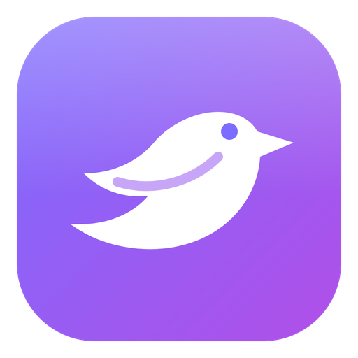
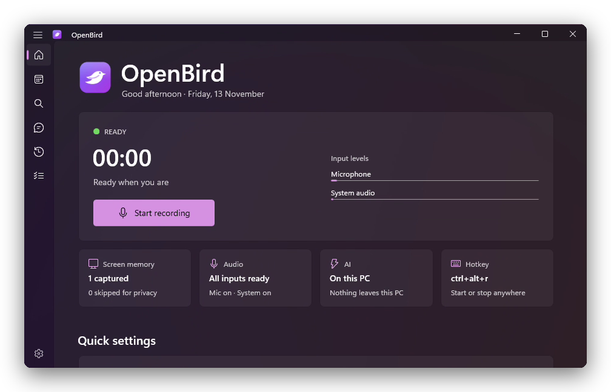
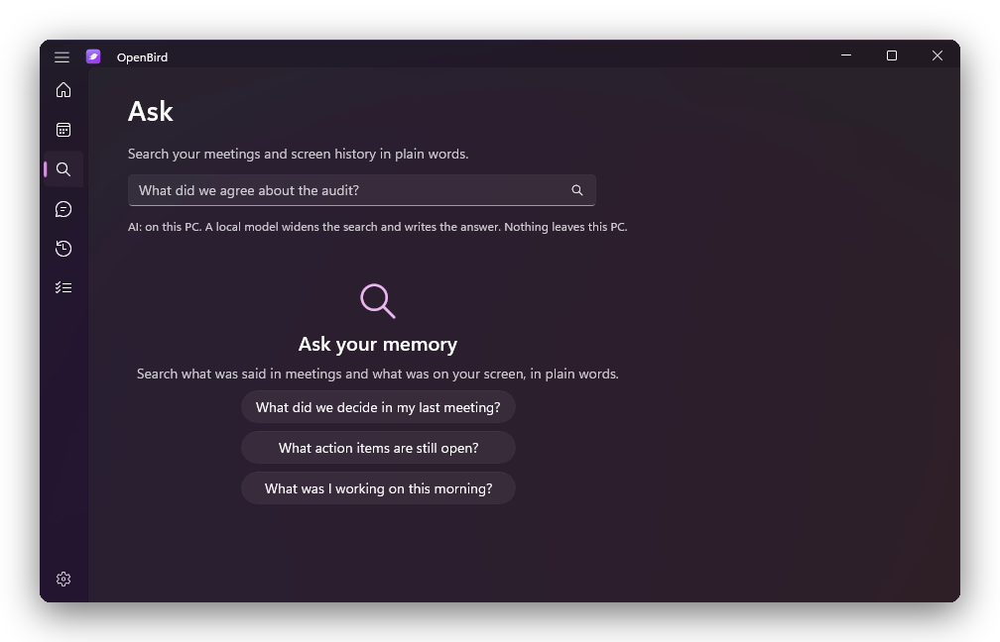
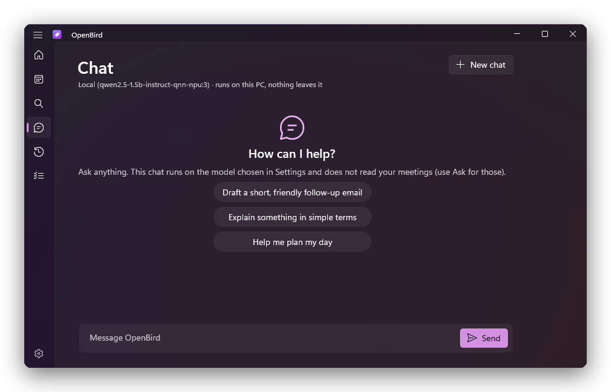
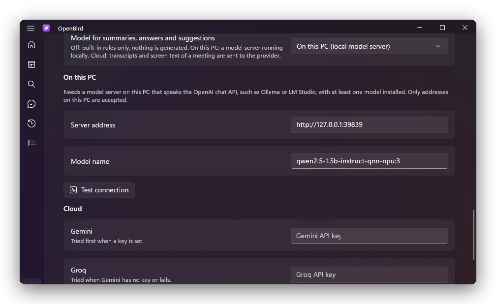
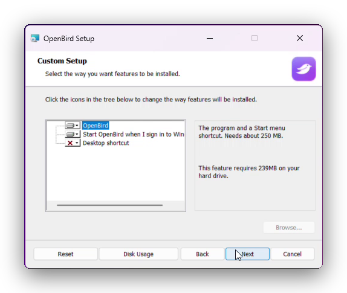

OpenBird
A local-first meeting recorder and screen memory for Windows 11. It transcribes offline, remembers what was on your screen, and writes plain Markdown notes that stay on your PC.
v3.1.0, stable · ARM64 MSI (unsigned) · or clone and build for any Windows 11 PC

A personal project. Check the law before you use it.
I built OpenBird for my own use. It comes with no support and no warranty. The recommended way to use it is to clone the repository, read the code, and tweak what you need.
It records other people and captures text from your screen. In the EU and UK that is personal data under the GDPR, and many places require every participant to consent to a recording. Check your data-protection and recording laws, and your employer's rules, first. Privacy and legal notes (not legal advice).
What it does
Everything runs on your PC. The notes are ordinary files you can read, search and keep.
Records both sides
Microphone and system audio as two channels. It starts when it hears speech, or on a hotkey.
Transcribes offline
Whisper through sherpa-onnx, on your own processor. No audio leaves the PC.
Remembers your screen
Reads the screen with Windows OCR every 20 seconds. Password managers, sign-in pages, private browsing and banking windows are skipped.
Plain Markdown
Summary, decisions, action items and a full transcript per meeting, plus a daily digest and a task list.
Ask your memory
Ask "what did we decide last time?" in plain words and get an answer with its sources.
You choose the AI
Off, on this PC (Foundry Local, Ollama, LM Studio) or cloud (Gemini or Groq, with your own key).
A look inside
A native WinUI 3 app with Windows notifications, a tray menu, and a per-user installer.




Install
Two ways. The first is the one I recommend.
Recommended: clone and build
Windows 11 and the .NET 10 SDK. Read the code, change what you like, build for your own processor.
git clone https://github.com/TH0MSX/OpenBird.git
cd OpenBird\dotnet
.\install.ps1Installs to %LOCALAPPDATA%\Programs\OpenBird with a Start menu shortcut. No administrator rights.
Or: the MSI
Download OpenBird-3.1.0-arm64.msi from the latest release, compare its SHA-256 with the release notes, then run it.
It is unsigned, so SmartScreen warns. Choose More info, then Run anyway, only if the hash matches. ARM64 only. On x64, build from source.
Set up
A short guide checks your microphone and system audio, asks about screen memory, and offers to start with Windows.
Download the speech model
About 200 MB, once. After that, transcription is fully offline.
Record
Press Win + Alt + R, or let it start when a conversation begins.
How far it has been checked
It is a stable release. It is also one person's project, tested on one machine.
| Core logic | 99 tests passing notes, search, digest, tasks, AI modes, chat, local-model handling |
|---|---|
| Windows 11 ARM64 | Used daily install, recording, transcription, Ask |
| Local AI (Foundry Local, NPU) | Works with a small model. A 7B model did not load on a 16 GB machine. |
| Windows 11 x64 | Not tested builds for x64, never run there |
| MSI installer | Unsigned built and installed on the ARM64 PC only |
| Cloud AI | Opt-in covered by unit tests with fake providers |
Privacy, and what it is not
Local-first is a good start. It is not the same as compliant.
Stays on your PC
No account, no analytics, no telemetry. The only network use is the one-time speech-model download, and cloud AI if you switch it on.
Not encrypted
Screenshots, the database and any API keys are stored unencrypted. Use disk encryption and keep the folders out of shared sync.
Other people's data
You record voices and read screens that include other people. Tell them, get consent where the law needs it, and ask your employer first for work meetings.
Cloud mode
If you add a Gemini or Groq key, transcripts and screen text are sent to that provider. Leave it off for anything confidential.